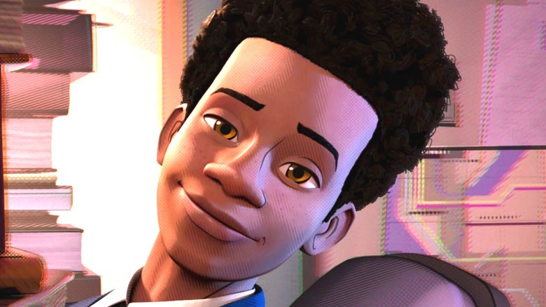

Miles Morales foi criado pelo escritor Brian Michael Bendis e pelo artista Sara Pichelli em 2011.
Miles é um adolescente afro-latino-americano, que vive em Nova York, e que assume o manto do Homem-Aranha após a morte de Peter Parker em sua dimensão.
A história de Miles Morales é importante porque representa uma mudança significativa na diversidade dos personagens dos quadrinhos.
Ele é um dos poucos super-heróis afro-latino-americanos e é um personagem importante para muitos fãs que se identificam com sua cultura e experiências.
